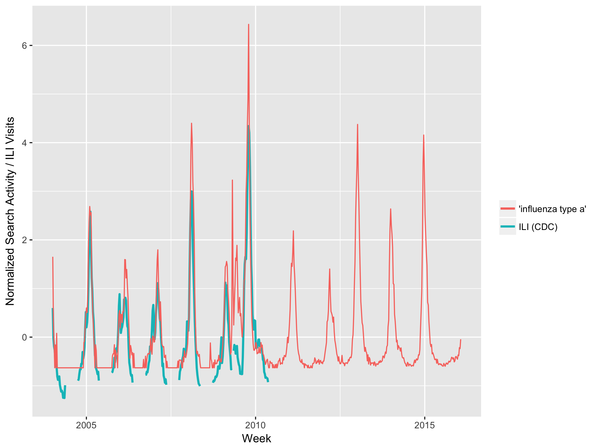
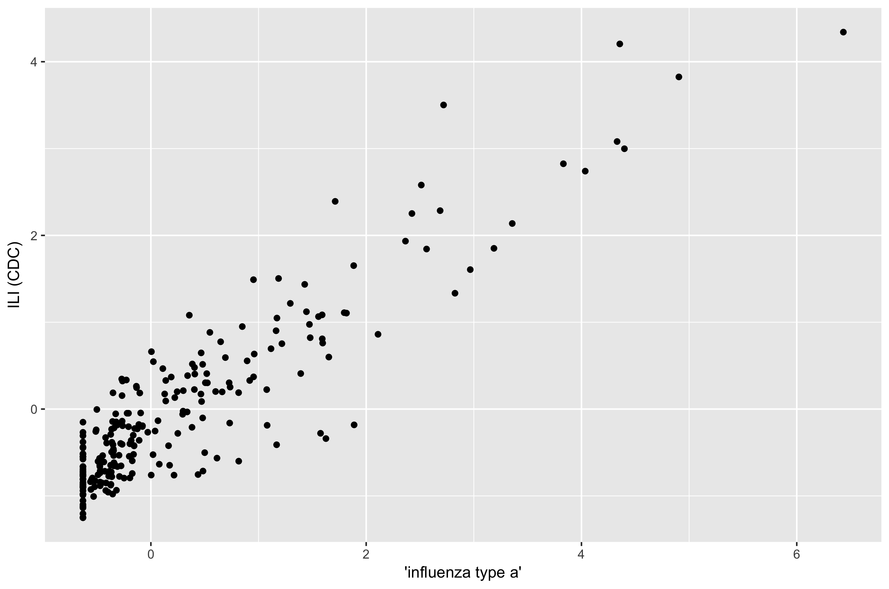
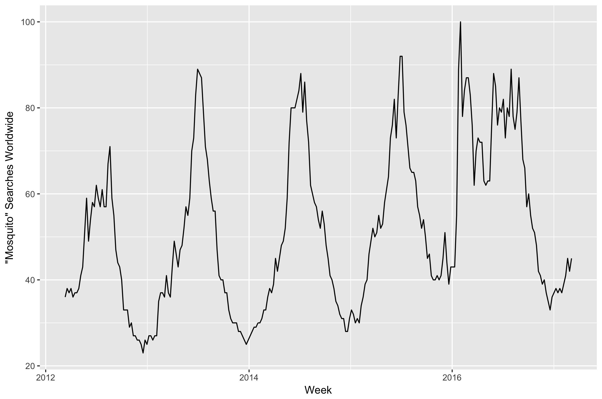
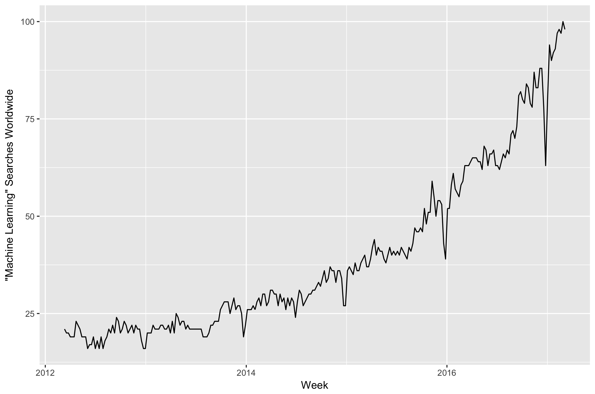
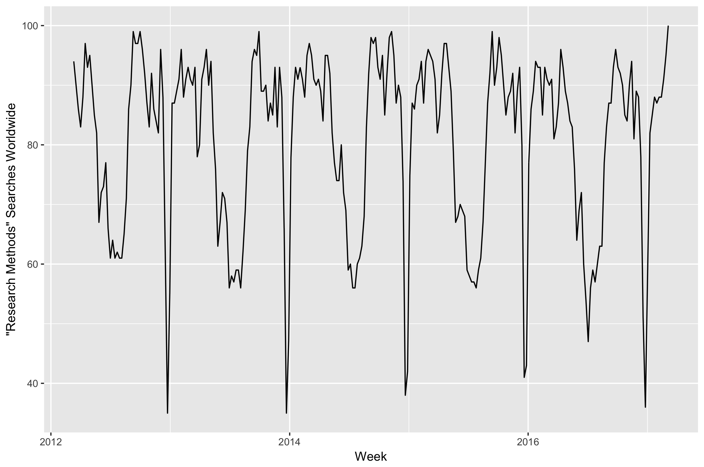
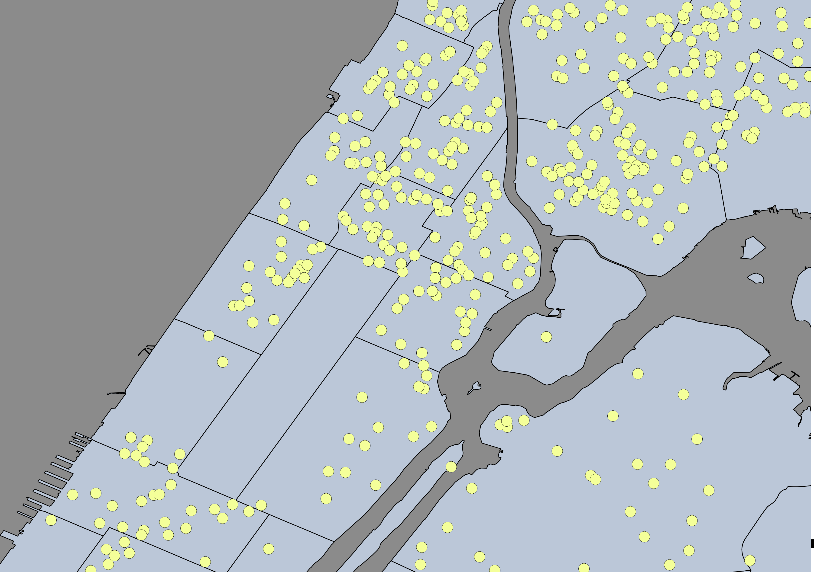

Research Methods for Global Studies
Class 16: Big Data and Emerging Methods
The Google Flu Trends Parable
Lazer et al. (2014)novelty
vs.
implementation
Original GFT
- Regress CDC-reported ILI proportion on mean trend for 45 search terms with strongest correlation to ILI
- Predictions at time t 1-2 weeks ahead of CDC's release
Search Term Selection
Search Term Selection
Revised GFT
- Additional search terms used
GFT
$$ \text{logit}[I(t)] = \alpha + \beta \left( \text{logit}[Q_i(t)] \right) + e $$GFT limits
- 2009: Misrepresented epidemic curve and needed to be manually updated
- 2012-13: analysis suggested GFT inferior to traditional methods
Why?
GFT weaknesses
- ignored variability in search terms
- relied on investigator opinion
- ignored changes in algorithm and search behavior over time
- hidden methods
Extensions and Improvements?
Mosquito Trend?
Machine Learning
Machine Learning Trend
Research Methods Trend
Machine Learning
- "the study of data-driven methods capable of mimicking, understanding and aiding human and biological information processing tasks."
- --David Barber, Bayesian reasoning and machine learning. (Cambridge University Press, 2012).
Machine Learning
- Supervised: Computer given training set of inputs and outputs
- Unsupervised: Computer is tasked with finding structure in data without initial labels.
- Reinforcement: Computer interacts with dynamic environment and is given feedback as it goes.
Unsupervised Learning Example: Clustering

Unsupervised Learning Example: Clustering
How can we assign points to groups?